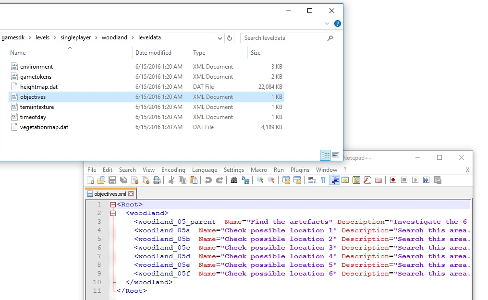
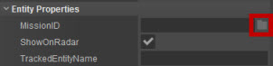

Overview
After completing this tutorial, you will be able to set up an objective for use within a game level. This tutorial assumes that the reader has a basic knowledge of the Flow Graph and Object Placement.
This tutorial may rely on the GameSDK Sample Project. We recommend that you download this from the Asset Database, import it into your Launcher, start it from there and then create a new level.
See this page to find out how to import a project to your Launcher. (The default folder for the GameSDK Sample Project when downloaded is C:\Program Files (x86)\Crytek\CRYENGINE Launcher\Crytek\gamesdk_<XXX>\GameSDK)
How to Create a Custom Objective Text for a Level
The Objectives_global.xml File
The file that will contain all the information for the objective is located in:YOUR_PROJECT_FOLDER\Assets\Levels\<level name>\leveldata\objectives.xml.
When you open the file in a text editor, you will see a few lines of example objectives. The following example shows the text broken into useful parts.
Setting Up the File
The text in the file will look like this:
<Root>
<Example>
<Objective_01 Name="Example Objective 1" Description="Example Text." />
<Objective_02 Name="Example Objective 2" Description="Example Text." />
<Objective_03 Name="Example Objective 3" Description="Example Text." />
</Example>
</Root>
At the start and end of the objectives file are the <Root> and </Root> tags.
Now we will add our own objectives. You need to create a tag for the level. If the level is called LevelName, the tags will be <LevelName> and </LevelName>:
<Root>
<Example>
...
</Example>
<LevelName>
</LevelName>
</Root>
Objective Number
<Root>
<Example>
...
</Example>
<LevelName>
<Objective_01 Name="Mission Objective Title" Description="Mission Objective Description" />
</LevelName>
</Root>
Now to setting up the objective and its text.
Within the level tags, place another tag containing a short reference number for the objective. For example, if it is the first objective in the level, open the tag with <Objective_01.
Please note that if you want multiple objectives in the level, you should clone this entire line, with a second objective line, as shown below:
<Root>
<Example>
...
</Example>
<LevelName>
<Objective_01 Name="Mission Objective Title" Description="Mission Objective Description" />
<Objective_02 Name="Mission Objective Title" Description="Mission Objective Description" />
</LevelName>
</Root>
Objective Name
<Root>
<Example>
...
</Example>
<LevelName>
<Objective_01 Name="Mission Objective Title" Description="Mission Objective Description" />
</LevelName>
</Root>
Next, add a Name for the objective. After <Objective_01, add Name="Mission Objective Title", where Mission Objective Title is the name of your objective e.g. "Lower Control Rods".
It is possible to use text tags for the name and description of the objectives. This can be useful as they can then be linked to the localization spreadsheet. To do this you have to place an '@' at the beginning and use the correct text tag from the localisation file.
An example is shown below:
<Objective_01 Name="@texttagexample01" Description="@texttagexample02" />
Please refer to the UI Localization Documentation for more information on the localization system.
Objective Description
<Root>
<Example>
...
</Example>
<LevelName>
<Objective_01 Name="Mission Objective Title" Description="Mission Objective Description" />
</LevelName>
</Root>
Now, create the description of the objective. The description is the longer text under the name of the objective. Replace Mission Objective Description with the required text. To finish, close the tag with />.
Example
Mission objectives that are valid for more than one level, are the objectives that you should add to the Objectives_global.xml. An example would be the tactical scan (visor) info, or simple basic objectives such as go here, kill this, destroy that etc.
<Root>
<Intro>
<Intro_Objective_01 Name="Plant C4" Description="Plant C4" />
<Intro_Objective_02 Name="Plant C4" Description="Plant C4" />
<Intro_Objective_03 Name="Plant C4" Description="Plant C4" />
<Intro_Objective_04 Name="Meet Psycho" Description="Meet Psycho" />
<Intro_Objective_05 Name="Follow Psycho" Description="Follow Psycho" />
</Intro>
<BasicObjective>
<BasicObjective_Follow name="Follow" Description="Description" />
<BasicObjective_Infiltrate name="Infiltrate" Description="Description" />
<BasicObjective_Attack name="Attack" Description="Description" />
<BasicObjective_Defend name="Defend" Description="Description" />
</BasicObjective>
<TacticalScan>
<TacticalScan_Flank Name="@TacticalScan_Flank_Name" Description="@TacticalScan_Flank_Description" Secondary="true"/>
<TacticalScan_Attack Name="@TacticalScan_Attack_Name" Description="@TacticalScan_Attack_Description" Secondary="true"/>
<TacticalScan_Defend Name="@TacticalScan_Defend_Name" Description="@TacticalScan_Defend_Description" Secondary="true"/>
<TacticalScan_Enter Name="@TacticalScan_Enter_Name" Description="@TacticalScan_Enter_Description" Secondary="true"/>
</TacticalScan>
</Root>Level-Specific Objective.xml
Sometimes, depending on the amount of levels you want to ship with your game, this Objectives_global.xml can get quite large. And certain mission objectives are only valid for a specific level. To make a dedicated "level-specific" objectives list, you can re-create this file embedded within the level itself.
For example: the Woodland level shipped with the GameSDK Sample Project contains its own dedicated objectives.xml file save within the woodland\leveldata folder.

Pic1: Objectives.xml in GameSDK Sample Project
Mission Objective Entity
Placing the Mission Objective Entity
Now that you have set up an XML file, go to the Create Object tool and click on Entity -> Others -> MissionObjective. You can then drag this MissionObjective entity into the level.
Now, go to Entity Properties and click the Mission Objectives Browser button, shown in the image below. In the MissionID field, click the button to open the browser to select the missionID you want to assign to this objective entity.

Pic2: Mission Objective browser button